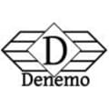
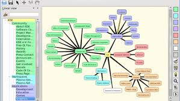

| # | Herramienta | Interfaz | Descripción | Ventajas |
|---|---|---|---|---|
| 1 | Una herramienta informática para la creación y ejecución de unidades didácticas multimedia e interactivas para la enseñanza y el aprendizaje de lenguas. Desarrollado con la participación de cualificados profesionales de la educación y programción multimedia de Reino Unido, Francia, Irlanda y España. |
|
||
| 2 |  |
Es un sistema de programación Smalltalk de código abierto con entornos de ejecución rápida para todas las plataformas principales. Cuenta con el marco Morphic, que promueve el desarrollo y mantenimiento de aplicaciones gráficas e interactivas de bajo esfuerzo. Se han creado muchos proyectos con éxito con Squeak. |
|
|
| 3 |
Paint.Net |
 |
Un entorno para la creación, realización y evaluación de actividades educativas multimedia, desarrollado en la plataforma Java. |
|
| 4 |
HotPotatoes |
 |
La suite Hot Potatoes incluye seis aplicaciones, lo que le permite crear ejercicios interactivos de opción múltiple, respuesta corta, oraciones mezcladas, crucigramas, emparejar / ordenar y llenar espacios para la World Wide Web. Hot Potatoes es un programa gratuito y puede usarlo para cualquier propósito o proyecto que desee. No es de código abierto. |
|
| 5 |  |
Un entorno interactivo adaptado para enseñar conceptos básicos de programación a los niños y a las niñas |
|
|
| 6 | Es un juego educativo que permite la práctica de operaciones aritméticas sencillas de suma, resta, multiplicación y división. |
|
||
| 7 |
MathWar |
Cálculos simples para final de primaria y secundaria. |
|
|
| 8 |
Kitsune |
Cálculo matemático. Con un conjunto de números hay que pensar que operaciones tenemos que hacer para encontrar un resultado dado. Como uno de los juegos del programa "Cifras y Letras" |
|
|
| 9 |
Maxima y wMaxima |
Maxima es un sistema para la manipulación de expresiones simbólicas y numéricas, incluyendo diferenciación, integración, expansión en series de Taylor, transformadas de Laplace, ecuaciones diferenciales ordinarias, sistemas de ecuaciones lineales, vectores, matrices y tensores. Maxima produce resultados de alta precisión usando fracciones exactas, números enteros de precisión arbitraria y números de coma flotante con precisión variable. Adicionalmente puede graficar funciones y datos en dos y tres dimensiones. |
|
|
| 10 | Es un software de matemáticas dinámicas para todos los niveles educativos que reúne geometría, álgebra, hoja de cálculo, gráficos, estadística y cálculo en un solo programa fácil de usar. GeoGebra es también una comunidad en rápida expansión, con millones de usuarios en casi todos los países. GeoGebra se ha convertido en el proveedor líder de software de matemática dinámica, apoyando la educación en ciencias, tecnología, ingeniería y matemáticas |
|
||
| 11 |
DrGeo |
Dr. Geo pretende ser un software de geometría interactivo abierto, fácil de estudiar, modificar y ampliar. Se distribuye con su código fuente. Puede modificar su propio código fuente mientras lo usa. Los niños de diez años usan Dr. Geo para explorar el boceto geométrico euclidiano, los niños ágiles lo extienden y programan con su lenguaje Pharo dinámico integrado y su interfaz de usuario. |
|
|
| 12 |
SciLab |
Una plataforma de computación numérica |
|
|
| 13 | Se trata de un simulador que es capaz de aplicarlas a los objetos que el usuario dibuja sobre un plano. |
|
||
| 14 | Editor para OpeStretMap (OSM), un proyecto dirigido expresamente a crear y ofrecer datos geográficos libres, tales como planos de calles, a cualquiera que los desee. El proyecto comenzó debido a que muchos mapas que se cree que son libres, tienen en realidad restricciones legales o técnicas para su uso, lo cual evita que la población los utilice de forma creativa, productiva o inesperada. |
|
||
| 15 | Stellarium es un planetario de código abierto para su computadora. Muestra un cielo auténtico en 3D, tal como lo que ve a simple vista, con binoculares o un telescopio. |
|
||
| 16 | Planetario para nuestro ordenador que promete deshacerse de la sensación de estar anclado al suelo, Ofrece contemplar todo el universo y viajar a través de él descubriendo sistemas solares, galaxias y más de 100 mil estrellas diferentes. |
|
||
| 17 |
MuseScore |
Es un poderoso programa que nos permite la notación y composición musical. Compatible con múltiples plataformas como Windows, MAC y Linux, además de soportar una amplia variedad de formatos de archivos y métodos de entrada. |
|
|
| 18 |

Denemo |
Denemo es un programa gratuito de notación musical para GNU / Linux, Mac OSX y Windows que le permite ingresar rápidamente la notación que compone utilizando el grabador de música Lylipond . La música se puede escribir en el teclado de la PC o reproducir a través de un controlador MIDI , o ingresar acústicamente en un micrófono conectado a la tarjeta de sonido de su computadora. |
|
|
| 19 |
Rosegarden |
Rosegarden es un entorno de composición y edición musical basado en un secuenciador MIDI que cuenta con una rica comprensión de la notación musical e incluye soporte básico para audio digital, es una aplicación atractiva y fácil de aprender que se ejecuta en Linux, ideal para compositores, músicos, estudiantes de música y entornos de grabación de estudio o domésticos pequeños. |
|
|
| 20 |
Semantik |
 | Es una aplicación de mapas mentales para KDE que ayuda a crear documentos como informes o presentaciones. |
|
| 21 | Es una herramienta diseñada para crear mapas conceptuales que puede resultar de gran utilidad a la hora de diseñar proyectos, estructuras apuntes o simplemente, para ayudar a plasmar de alguna manera alguna idea interesante que ronde por la cabeza. |
|
||
| 22 | VYM - View Your Mind es una aplicación para crear, diseñar y desarrollar mapas mentales. Una forma intuitiva, práctica y visual de almacenar la información. Es muy práctico para plasmar gráficamente unas ideas, procesos o diferentes fases de un proyecto. |
|
||
| 23 |
IHMC CMap Tools |
Mapas mentales y conceptuales, permite la posibilidad de crear mapas conceptuales web que incorporen archivos adjuntos o enlaces a otras páginas. |
|
|
| 24 |
Tux Typing |
Programas para practicar la mecanografía para los pequeños. |
|
|
| 25 |
gBrainy |
Entretenimiento mental en ramas como; lógica, cálculo, memoria y analogías verbales |
|
|
| 26 |
GCompris |
Es un conjunto de más de 100 actividades educativas para niñas y niños de 2 a 10 años. |
|
|
| 27 | Conjunto de actividades muy completo que contiene: Kanagram, KHangMan, Kiten, KLettres, KWordQuiz, Parley, KAlgebra, KBruch, Kig, KmPlot, Blinken, KGeography, KTouch, KTurtle, Kalzium, KStars, Marble, Step, Cantor,... pensados para lenguaje, idiomas, matemáticas, geografía, astronomía, programación Logo, sonidos, entre otros. |
|
||
| 28 |
ChildsPlay |
Actividades variadas de memoria, lenguaje, números, sonidos, laberintos |
|